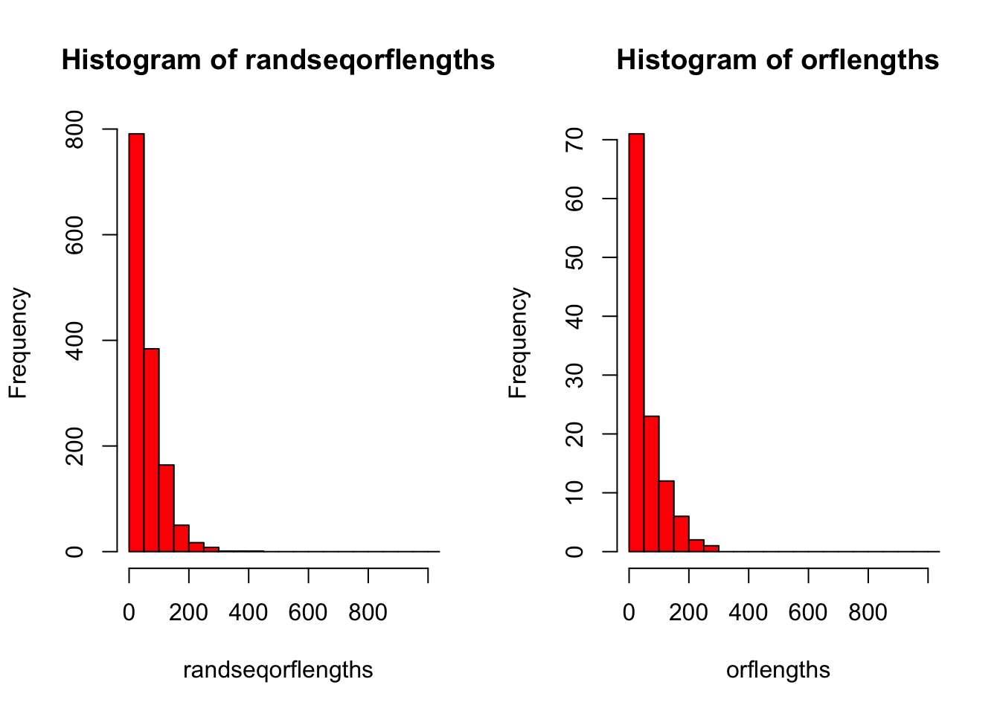
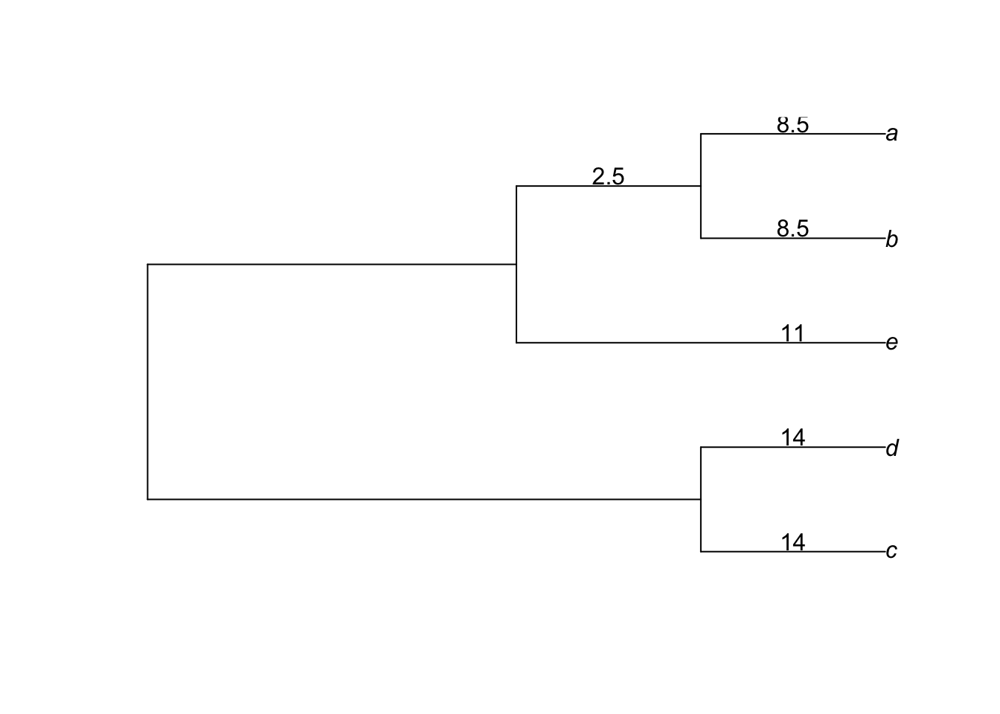
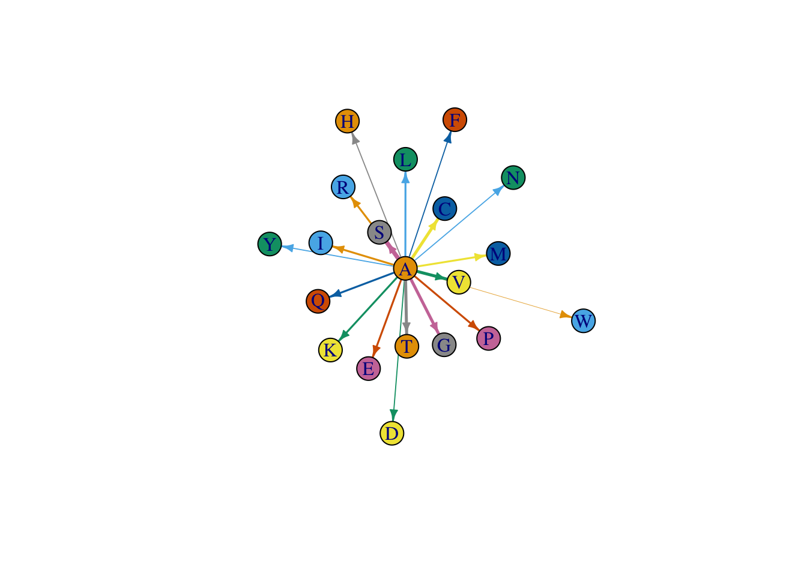
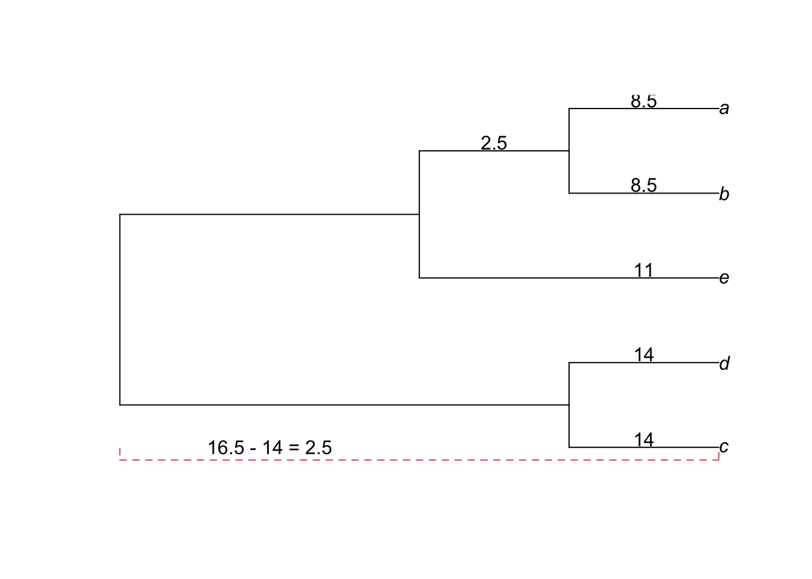

Chapter 40 UPGMA the hard way
library(compbio4all)40.1 Introudction to UPGMA
- UPGMA is a basic clustering algorithm which can be used for building phylognetic tree from distance matrices.
- It still has some applications because it is fast, but it has mostly beenn replaced by Neighbor Joining and Minimum Evolution methods.
- UPGMA is still useful for teaching the basic steps involved in data clustering and building trees.
- UPGMA is a particular variant of a general class of algorithms. Another varient is WPGMA.
40.2 Preliminaries
40.2.1 R Libraries
The phangorn package contains the functions
- upgma()
- wpgma()
The ape package has the function nj() for neighbor joinging, which is useful for comparison to UPGMA.
40.2.1.1 Phylogenetic libraries
#install.packages("ape")
#install.packages("phangorn")
library(ape)
library(phangorn)##
## Attaching package: 'phangorn'## The following object is masked from 'package:igraph':
##
## diversity40.2.1.2 Plotting libraries
#install.packages("plotrix")
library(plotrix)40.2.2 Custom function we’ll use
To help us understand clustering and UPGMA I’ve written a cusome function.
This function, plot_dist_as_nmds(), will make a 2-dimensional (2D) representation of the distance matrices we’ll be working with. This is only an approximation and will occassionally result in distorions.
What this function does is take a distance matix and attempt to plot the data as if they were in 2-dimensional space. If we were giving it the distance between building on campus it would plot a reasonable map. Since we’ll be plotting data that isn’t physical distance but genetic distances this will not be a real evolutionary tree. The intent here is to help you build your intuition about what a distane matrix is.
## Load ALL of this code
# TODO: ylim and xlim are current hard coded
plot_dist_as_nmds <- function(mat, x.lim = c(-20,20), y.lim = c(-20,20)){
matno0 <- mat
matno0[is.na(matno0)] <- 0
d2 <- stats::cmdscale(matno0, add =T)
x <- d2$points[,1]
y <- d2$points[,2]
plot(x,y, main = "APPROXIMATE 2D distances",
xlim = x.lim,
ylim = y.lim)
text(x, y, labels = row.names(d2$points), cex=3)
return(d2)
}40.3 Data matrix
We’ll use data from a study that built a tree using rRNA from bacteria.
The data and a worked example are available at https://en.wikipedia.org/wiki/UPGMA#First_step
This particular matrix is set up as the number of bases that are different between each sequence. (In the next unit we’ll discuss how they didn’t use just a simple count of the differences).
40.3.1 Building the matrix
One way to make the data is to use the rbind() individual vectors as rows
# The data
# a b c d e
a <- c(0, 17, 21, 31, 23)
b <- c(17, 0, 30, 34, 21)
c <- c(21, 30, 0, 28, 39)
d <- c(31, 34, 28, 0, 43)
e <- c(23, 21, 39, 43, 0)
# Bind into a matrix
dmat1 <- rbind(a,b,c,d,e)rbind() takes each vector (a through e) and glues them together into a matrix
is(dmat1)## [1] "matrix" "array" "mMatrix" "structure"
## [5] "vector" "vector_OR_Vector" "vector_OR_factor"As a challenge, can you take these data and make these data into a matrix using the matrix() function?
The finished matrix looks like this
dmat1## [,1] [,2] [,3] [,4] [,5]
## a 0 17 21 31 23
## b 17 0 30 34 21
## c 21 30 0 28 39
## d 31 34 28 0 43
## e 23 21 39 43 0Add names using colnames()
colnames(dmat1) <- c("a","b","c","d","e")The matrix is symmetrical.
Challenge questions: How would we interpret the diagonal? Why is it not 1? Why is this matrix symmetrical?
Its easier if you make redundant elements NA because we don’t need them.
We can access the diagonal of the matrix directly and set it to NA using the diag() function
diag(dmat1) <- NANow the matrix looks like this
dmat1## a b c d e
## a NA 17 21 31 23
## b 17 NA 30 34 21
## c 21 30 NA 28 39
## d 31 34 28 NA 43
## e 23 21 39 43 NAWe only need the lower left-hand part of the matrix. We can set the upper right-hand part of the matrix to NA like this:
dmat1[upper.tri(dmat1)] <- NA(don’t worry about exactly what’s going on here)
Matrix now looks like this
dmat1## a b c d e
## a NA NA NA NA NA
## b 17 NA NA NA NA
## c 21 30 NA NA NA
## d 31 34 28 NA NA
## e 23 21 39 43 NA40.4 What does this distance matrix represent?
40.4.1 Genetic distances conceptualized as pairwise linear distances
- Each element of the matrix is a pairwise distance.
- These distances were computed using pairwise alignments of each sequence.
- In this case, it is the number of nucleotides that are different between two sequences.
- As is standard, these alginments ignored any indels.
- There are 5 sequences, and if each is compared against the other then there are 10 total distances.
- Mathematically these are called Hamming distances.
Each distance is the distance between two species, and it can be conceptualized on its own as a linear distance.
You could visualize a single pairwise distance like a linear distance like this:
(note: you don’t need to understand all of this code, but you do need to understand how it relates to the distance amtrix)
par(mfrow = c(1,1))
plot(0, 0, xlim = c(0,max(dmat1,na.rm = T)),
ylim = c(0,12),
type = "l",
xlab = c("Distance (number of mutations)"),
ylab = "Pairwise comparison",
main = "Linear distance a vs. b")
points(0, 1, pch = "a")
points(dmat1[2,1], 1, pch = "b")
segments(x0 = 0, y0 = 1,
x1 = dmat1[2,1],y1 = 1)
abline(h = 1.5, col = 2)
We can look at all of the distance Note that each line is independent and cannot be compared (the y axis has no meaning). This is NOT a 2D map!
# This code is complex and the goal is to assess the plot, not understand the code
plot(0, 0, xlim = c(0,max(dmat1,na.rm = T)),
ylim = c(0,12),
type = "l",
xlab = c("Distance (number of mutations)"),
ylab = "Pairwise comparison")
pair.k <-0
for(i in 1:nrow(dmat1)){
for(j in 1:nrow(dmat1)){
dist.ij <- dmat1[i,j]
if(is.na(dist.ij) == FALSE){
pair.k <- pair.k+1
spp.i <- rownames(dmat1)[i]
spp.j <- colnames(dmat1)[j]
points(-0.5, pair.k, pch = spp.j, col = which(LETTERS %in% toupper(spp.j)), cex = 1.75)
points(dist.ij+0.75, pair.k, pch =spp.i, col = which(LETTERS %in% toupper(spp.i)), cex = 1.75)
segments(x0 = 0, y0 = pair.k,
x1 = dist.ij, y1 = pair.k)
abline(h = pair.k+0.5, col = 2)
}
}
}
- We can see that the distance between a and b is the smallest, at 17 amino acid changes.
- UPGMA, WPGMA and related algorithms all begin by identifying the two taxa that are closest together.
- These 2 taxa form a clade (cluster). THe algorithm then proceeds by finding the next taxa (eg, c, d or e) which is closest to that clade of a and b
- We can summarize this first clad using Newick notation as: (a, b)
40.4.2 Genetic distances conceptualized as 2D map of linear distances
- We can extend the analogy of linear distance to two dimensions.
- With some fancy math we can make a 2D plot where the distances in 2D space are similar to the distances in the matrix.
- This is NOT exact and should not be taken literally. (See Pevsner Chapter 7 for a similar use of a 2D map)
- This is just a tool for teaching and not something done as part of an actual analysis.
par(mfrow = c(1,1), mar= c(2,2,2,2))
dmat1no0 <- dmat1
dmat1no0[is.na(dmat1no0)] <- 0
d2 <- cmdscale(dmat1no0, add =T)
x <- d2$points[,1]
y <- d2$points[,2]
plot(x,y, main = "APPROXIMATE 2D distances",xlim = c(-20,20), ylim = c(-20,20))
text(x, y, labels = row.names(d2$points), cex=3)
- In this plot, things appear to have been distorted a bit.
- a and b are close to each other as expect,
- but b looks closest than e (to me).
- It does show how a and b are close, and d and e are further apart.
40.5 From linear distances to “tree distances”
Genetic distances aren’t actually linear - we are assuming a “tree shape” to represent the divergence of two species genetically (and possibly geographically).
The simplest methods of building trees assume that all branch lengths terminate at the same distance from the root, and the total mutational distance traversed by each species is the same. (This is the assumption or constraint related to ultrametricity).
The distance between a and b is 17. We assume that both species a and species b have undergone the same number of mutations since they split, so the branch lengths for each are 17/2 = 8.5. (You obviously can’t have 8.5 mutations, but this is how the math works).
The following plots shows how the linear distnace of 17 between a and b (bottom) gets split into two branches, each of 8.5.
# This code is dense; run it and focus on the plot
par(mfrow = c(1,1), mar= c(2,2,2,2))
plot(0, 0, xlim = c(0,max(dmat1,na.rm = T)),
ylim = c(0,12),
type = "l",
xlab = c("Distance (number of mutations)"),
ylab = "Pairwise comparison")
points(0, 1, pch = "a")
points(dmat1[2,1], 1, pch = "b")
segments(x0 = 0, y0 = 1,
x1 = dmat1[2,1],y1 = 1)
abline(h = 1.5, col = 2)
branch.length <- dmat1[2,1]/2
points(0, 4)
points(branch.length+0.75, 4, pch = "a")
points(0, 6)
points(branch.length+0.75, 6, pch = "b")
segments(x0 = 0, y0 = 4,
x1 = branch.length,y1 = 4)
segments(x0 = 0, y0 = 6,
x1 = branch.length,y1 = 6)
segments(x0 = 0, y0 = 4,
x1 = 0, y1 = 6, col = 1, lty = 2)
abline(h = 8, col = 2)
Again, in Newick notation, we’d write (a, b) to indicate that a and b are a clade.
40.6 The UPGMA algorithm
The UPGMA algorithm is described by Swofford et al (1996?, page 486) as below.
The word “cluster” means “taxa” in some cases and “clade” in others.
* This is a bit tricky at first but once you get a sense for the whole algorithm it will make more sense.
* To keep track of everything we’ll use subscripts i and j, represented in plain text as e.g. d.ij for the distance (d) in row i and column j.
40.6.1 Step 1: find the 2 taxa that are currently closest together
- “Given a matrix of pairwise distances, find the clusters (taxa) i and j such the d.ij is the minmum value in the table.” (d.ij is the distance between taxa i and taxa j)
In our example, d.ij = d.ba = 17, with i = b and j = a.
dmat1["b","a"]## [1] 1740.6.3 Step 3a: determine if the algorithm is done
- “If i and j were the last two clusters, the tree is complete”
40.6.4 Step 3a: Continue on if needed and combine the previous cluster into cluster “u”
- If there is more to do, “create a new cluster called u.” This new cluster is a clade of a and b will represent the combined features of a and b.
What this means is that now that we’ve mapped taxa a and b into a clade we need to update our matrix to determine how far all the remaining taca (c, d and e) are from that clade.
40.6.5 Step 4: Determine the distance from u to the other remaining clusters.
- “Define the distance from [the new cluster] u to each other [remaining] cluster (k, with k==i or j) [here cluster = clade in the first part of the sentence and taxa in the other] to be an average of the distnace d.ki and d.jk.” That is, calculate the distance from the new clade u to all the remaining taxa, which we’ll generically call “k.” The new distance will be called d.ku, for “distance from taxa k to clade u.”
The exact calculation of the average can take different forms. This will be unpacked below.
40.6.6 Step 5: Create a new matrix
- “Go back to step 1 with one less cluster; cluster i and j have been eliminated, and cluster u has been added.” The distance matrix is now shrunk with all distance related to i and j removed and replaced by information about u.
40.6.7 Key step: calculating the distance from a clade to the remaining taxa
For step 4, UPGMA uses the equation below to calculate distances. This will require some notation:
- Ti = the number of taxa in cluster i. This is 1 if the “cluster” is a single taxa (eg. 1 species), or it can be >1 if a previous iteration has created a clade.
- Tj = the number of taxa in cluster j.
- d.ku = the distance from k to u. k and u can be individual taxa OR clades created by the algorithm.
The key quantity d.ku is calculated as:
d.ku = (Ti x d.ki + Tj x d.kj)/(Ti + Tj)
(You should know this equation AND you should be able to write R code to calcualte it)
You can think of this as a weighted mean where the weights are the number of taxa in each clade. Its a very annoying that the “U” in UPGMA means “un-weighted” even though there is, from one perspective weighting, but this is how the math people say we should think about it (the un-weighted part has to do with some other aspect of the math).
In the above outline of the algorithm, if i and j are the first two taxa grouped then the equation would be
d.ku = (Ti x d.ki + Tj x d.kj)/(Ti + Tj) Ti = 1, Tj = 1, so d.ku = (1 x d.ki + 1 x d.kj)/(1 + 1) d.ku = (d.ki + d.kj)/2
40.7 Calculate 2D representation
We can think about this using a 2D representation.
First, plot the 2D map.
dmat1.out<- plot_dist_as_nmds(dmat1)
a and b are closest together, so we group them
I’ll show this in the code below; you don’t need to understand exactly how this code works.
dmat1.out<- plot_dist_as_nmds(dmat1)
#get x y coord of a and b
a.<-dmat1.out$points["a",]
b.<-dmat1.out$points["b",]
plot_dist_as_nmds(dmat1)## $points
## [,1] [,2]
## a 6.606653 4.9400937
## b 12.421702 -6.5267890
## c -9.532025 12.9665271
## d -17.839642 -9.0739515
## e 20.738283 0.4897976
##
## $eig
## NULL
##
## $x
## NULL
##
## $ac
## [1] -7.934712e-15
##
## $GOF
## [1] 0.6755273 0.9367305draw.ellipse(x = mean(c(a.[1],b.[1])),
y = mean(c(a.[2],b.[2])),
a =3,
b = 10,
angle = 30
)
Once we have created a cluster (clade) we can consider the distance from the members of clade to all the remaining points. For example, here’s the distnace from a and b to c
# distance from ab to c
c.<-dmat1.out$points["c",]
plot_dist_as_nmds(dmat1)## $points
## [,1] [,2]
## a 6.606653 4.9400937
## b 12.421702 -6.5267890
## c -9.532025 12.9665271
## d -17.839642 -9.0739515
## e 20.738283 0.4897976
##
## $eig
## NULL
##
## $x
## NULL
##
## $ac
## [1] -7.934712e-15
##
## $GOF
## [1] 0.6755273 0.9367305segments(x0 = a.[1],x1 = c.[1],
y0 = a.[2],y1 = c.[2])
segments(x0 = b.[1],x1 = c.[1],
y0 = b.[2],y1 = c.[2]) 
In UPGMA, we first define a clade. We then need to see which taxa is closest to that clade. Visually it looks like this
par(mfrow = c(2,2), mar = c(2,2,2,2))
# ab to c
plot_dist_as_nmds(dmat1)## $points
## [,1] [,2]
## a 6.606653 4.9400937
## b 12.421702 -6.5267890
## c -9.532025 12.9665271
## d -17.839642 -9.0739515
## e 20.738283 0.4897976
##
## $eig
## NULL
##
## $x
## NULL
##
## $ac
## [1] -7.934712e-15
##
## $GOF
## [1] 0.6755273 0.9367305#get x y coord of a and b
a.<-dmat1.out$points["a",]
b.<-dmat1.out$points["b",]
draw.ellipse(x = mean(c(a.[1],b.[1])),
y = mean(c(a.[2],b.[2])),
a =3,
b = 10,
angle = 30)
c.<-d2$points["c",]
segments(x0 = a.[1],x1 = c.[1],
y0 = a.[2],y1 = c.[2])
segments(x0 = b.[1],x1 = c.[1],
y0 = b.[2],y1 = c.[2])
# ab to d
plot_dist_as_nmds(dmat1)## $points
## [,1] [,2]
## a 6.606653 4.9400937
## b 12.421702 -6.5267890
## c -9.532025 12.9665271
## d -17.839642 -9.0739515
## e 20.738283 0.4897976
##
## $eig
## NULL
##
## $x
## NULL
##
## $ac
## [1] -7.934712e-15
##
## $GOF
## [1] 0.6755273 0.9367305draw.ellipse(x = mean(c(a.[1],b.[1])),
y = mean(c(a.[2],b.[2])),
a =3,
b = 10,
angle = 30)
d.<-d2$points["d",]
segments(x0 = a.[1],x1 = d.[1],
y0 = a.[2],y1 = d.[2])
segments(x0 = b.[1],x1 = d.[1],
y0 = b.[2],y1 = d.[2])
# ab to e
plot_dist_as_nmds(dmat1)## $points
## [,1] [,2]
## a 6.606653 4.9400937
## b 12.421702 -6.5267890
## c -9.532025 12.9665271
## d -17.839642 -9.0739515
## e 20.738283 0.4897976
##
## $eig
## NULL
##
## $x
## NULL
##
## $ac
## [1] -7.934712e-15
##
## $GOF
## [1] 0.6755273 0.9367305draw.ellipse(x = mean(c(a.[1],b.[1])),
y = mean(c(a.[2],b.[2])),
a =3,
b = 10,
angle = 30)
e.<-d2$points["e",]
segments(x0 = a.[1],x1 = e.[1],
y0 = a.[2],y1 = e.[2])
segments(x0 = b.[1],x1 = e.[1],
y0 = b.[2],y1 = e.[2]) 
40.8 Algorithm - round 1
We will now implement the algorithm.
NOTE: I am not using a consistent system of nomeclature - I am mixing my own conventions with hose of Swofford et al. Sorry :(
First we’ll need a dataframe to hold tings
- it = iteration
- clust.i, clust.j = the two taxa or clades being combined
- dist.ij = value from distnace matrix between the taxa
- clust.u = name of the new combined cluster (clade)
- branch.l.ij = branch lengths
A matrix to hold things as I work
n.taxa <- nrow(dmat1)
UPGMA_output <- data.frame(it = c(1:n.taxa),
clust.i = NA,
clust.j = NA,
dist.ij = NA,
clust.u = NA,
branch.l.ij = NA)40.8.1 Determine minimum value in current matrix
The minimum distance using the min() function
dist.min.i <- min(dmat1, na.rm = T)The index value of the minimum, using which()
index.min.i <- which(dmat1 == dist.min.i, arr.ind =T)
index.row.i <- index.min.i[1]
index.col.i <- index.min.i[2]We can get the names of our taxa using rownames() and colnames()
cluster.i2 <- rownames(dmat1)[index.row.i]
cluster.i1 <- colnames(dmat1)[index.col.i]Add output to dataframe
# the clusters we're working iwth
UPGMA_output[1,"clust.i"] <- cluster.i1
UPGMA_output[1,"clust.j"] <- cluster.i2
# the distance between them
UPGMA_output[1,"dist.ij"] <- dist.min.i40.8.2 Combine species into clade
Combine the two taxa names into a new name. This can be done a couple ways.
# name of our clade
## hard-code "ab"
clade.i <- "ab"
## use paste() to generate name
clade.i <- paste("a","b",sep = "")
## general, re-usable code using paste() and object names
clade.i <- paste(cluster.i1,cluster.i2, sep = "")We’ll add this to the dataframe
UPGMA_output[1,"clust.u"] <- clade.iLook at things so far
UPGMA_output## it clust.i clust.j dist.ij clust.u branch.l.ij
## 1 1 a b 17 ab NA
## 2 2 <NA> <NA> NA <NA> NA
## 3 3 <NA> <NA> NA <NA> NA
## 4 4 <NA> <NA> NA <NA> NA
## 5 5 <NA> <NA> NA <NA> NA40.8.3 Calculate branch length
Branch length is the distance between the two taxa: distance/2 or d.ij/2
We can access the distance in our first row of the matrix like this
UPGMA_output[1,"dist.ij"]## [1] 17We can divided the distance betyween a and b by 2 to get our branch length like this
UPGMA_output[1,"dist.ij"]/2## [1] 8.5Now store the distance d in the dataframe
UPGMA_output[1,"branch.l.ij"] <- UPGMA_output[1,"dist.ij"]/2We’ve now completed our first round of calculations
UPGMA_output## it clust.i clust.j dist.ij clust.u branch.l.ij
## 1 1 a b 17 ab 8.5
## 2 2 <NA> <NA> NA <NA> NA
## 3 3 <NA> <NA> NA <NA> NA
## 4 4 <NA> <NA> NA <NA> NA
## 5 5 <NA> <NA> NA <NA> NA40.8.4 Calculate distance from clade to all other points
Distance (ab) to all other points
- ab to c
- ab to d
- ab to e
40.8.4.1 ab to c
This is calculated at the average of the distance
- from a to c, and
- from b to c.
In the Wikipedia article the math is framed like this
D(ab to c) = [D(a to c) + D(b to c)] / 2 D(ab to c) = [ 21 + 30 ] / 2 D(ab to c) = [ 21 + 30 ] / 2 D(ab to c) = 25.5
Dab_c = [Da_c + Db_c] / 2 Dab_c = 25.5
The math in the wikipedia article is more accurately written out as this, which is more similar to Swofford’s notation.
D(ab to c) = [T.iD(a to c) + T.jD(b to c)] / 2 D(ab to c) = [1D(a to c) + 1D(b to c)] / (1+1) D(ab to c) = [ 121 + 130 ] / (1+1) D(ab to c) = [ 121 + 130 ] / (1+1) D(ab to c) = 25.5
Dab_c = [1Da_c + 1Db_c] / (1+1) Dab_c = 25.5
Using Swofford et al’s notation we’d do this:
d.ku = (Ti x d.ki + Tj x d.kj)/(Ti + Tj)
I’ll just switch the subscripts to be consistent with the Wikipedia notation
d.uk = (Ti x d.ik + Tj x d.jk)/(Ti + Tj)
where
u = our new cluster ab k = the remaining clusters; we’ll start with c Ti, Tj = the number of clusters the constitute the clusters that were just combined. This starts out at 1. Ti = Ta = 1 Tj = Tb = 1 d.ik = the distance from cluster i to the reamining clusters; we’ll start with c d.ik = d.ac = 21 d.jk = d.bc = 30
d.ku = (Ti x d.ik + Tj x d.jk)/(Ti + Tj) d.ku = (1 x 21 + 1 x 30 )/( 1 + 1 ) d.ku = ( 21 + 30 )/(2) d.ku = 51/2 d.ku = 25.5
The Swofford notation is more generic and useful because in the next iteration we’ll have a cluster of ab which will have two taxa in it.
Ta <- 1
Tb <- 1
Da_c <- 21
Db_c <- 30
Dab_c <- (Ta*Da_c+Tb*Db_c)/240.8.4.2 ab to d
We now continue for the other distances. I’ll stick to the wikipedia notation for now.
D(ab to d) = [D(a to d) + D(b to d)] / 2 D(ab to d) = [ 31 + 34 ] / 2 D(ab to d) = [ 31 + 34 ] / 2 D(ab to d) = 32.5
Dab_d = [Da_d + Db_d] / 2 Dab_d = 32.5
Da_d <- 31
Db_d <- 34
Dab_d <- (Da_d+Db_d)/240.8.4.3 ab to e
D(ab to d) = [D(a to d) + D(b to d)] / 2 D(ab to d) = [ 23 + 21 ] / 2 D(ab to d) = [ 23 + 21 ] / 2 D(ab to d) = Dab_e
Dab_d = [Da_d + Db_d] / 2 Dab_d = Dab_e
Da_e <- 23
Db_e <- 21
Dab_e <- (Da_e+Db_e)/240.8.5 Update matrix with new distance
Old matrix has distances from a and b to all other points: we want to replace these. distances among c, d, and e are still the same values.
dmat1## a b c d e
## a NA NA NA NA NA
## b 17 NA NA NA NA
## c 21 30 NA NA NA
## d 31 34 28 NA NA
## e 23 21 39 43 NA40.8.5.1 Illustration
Values in parenthesese will be REPLACED
a <- c(NA, NA, NA, NA, NA)
b <- c("(17)", NA, NA, NA, NA)
c <- c("(21)", "(30)", NA, NA, NA)
d <- c("(31)", "(34)", "28", NA, NA)
e <- c("(23)", "(21)", "39", "43", NA)
dmat1.alt <- rbind(a,b,c,d,e)
colnames(dmat1.alt) <- c("a","b","c","d","e")
dmat1.alt## a b c d e
## a NA NA NA NA NA
## b "(17)" NA NA NA NA
## c "(21)" "(30)" NA NA NA
## d "(31)" "(34)" "28" NA NA
## e "(23)" "(21)" "39" "43" NACreate smaller matrix with clade ab
# ab c d e
ab <- c(NA, NA, NA, NA)
c <- c(Dab_c, NA, NA, NA)
d <- c(Dab_d, 28, NA, NA)
e <- c(Dab_e, 39, 43, NA)
dmat2 <- rbind(ab,c,d,e)
colnames(dmat2) <- c("ab","c","d","e")40.8.5.2 Estimate 2 D
Estimate of 2D representation of the new matrix.
plot_dist_as_nmds(dmat2)
## $points
## [,1] [,2]
## ab 13.453890 -3.0373250
## c -6.600828 13.4680501
## d -16.726270 -8.5744114
## e 19.948871 -0.6844397
##
## $eig
## NULL
##
## $x
## NULL
##
## $ac
## [1] -4.570935e-15
##
## $GOF
## [1] 0.7573625 1.000000040.9 Algorithm - next round
We’ve combined a and b and calculated the disnace of this clade (a,b) to the remaining taxa. What is now the minimum distance?
The minimum distance of the current matrix
dist.min.i <- min(dmat2, na.rm = T)The index value of the current minimum
index.min.i <- which(dmat2 == dist.min.i, arr.ind =T)
index.row.i <- index.min.i[1]
index.col.i <- index.min.i[2]We can get the names of our taxa using the
cluster.i2 <- rownames(dmat2)[index.row.i]
cluster.i1 <- colnames(dmat2)[index.col.i]Add output to dataframe
UPGMA_output[2,"clust.i"] <- cluster.i1
UPGMA_output[2,"clust.j"] <- cluster.i2
UPGMA_output[2,"dist.ij"] <- dist.min.i40.9.1 Combine species into clade
Combine the two taxa names into a new name. This can be done a couple ways.
clade.i <- "abe"
clade.i <- paste("ab","e",sep = "")
clade.i <- paste(cluster.i1,cluster.i2, sep = "")We’ll add this to the dataframe
UPGMA_output[2,"clust.u"] <- clade.i40.9.2 Calculate branch length
Branch length is distance/2 or d.ij/2 = d.ab.e = 22/2
UPGMA_output[2,"branch.l.ij"] <- UPGMA_output[2,"dist.ij"]/240.9.3 Recalculate distance from abe to all remainign taxa
In the current matrix, the smallest distance is between ab and e
We therefore want to form a clade between ab and e (abe), the measure the distance from this clade to allthe other species.
Visualize this as an approximate 2D situation
par(mfrow = c(1,1))
dmat2.out <- plot_dist_as_nmds(dmat2)
#get x y coord of ab and e
ab.<-dmat2.out$points["ab",]
e.<-dmat2.out$points["e",]
draw.ellipse(x = mean(c(ab.[1],e.[1])),
y = mean(c(ab.[2],e.[2])),
a =7,
b = 7,
angle = 0)
c.<-dmat2.out$points["c",]
segments(x0 = ab.[1],x1 = c.[1],
y0 = ab.[2],y1 = c.[2])
segments(x0 = e.[1],x1 = c.[1],
y0 = e.[2],y1 = c.[2]) 
40.9.3.1 abe to c
NOTE: calculations are “weighted” in proportion number of species in clade. So D(ab to c) is multiplied by two because ab is 2 species
The denominators is 3 because of the weights used in the numerator.
The notation in the Wikipedia article is:
D(abe to c) = [D(ab to c)2 + D(e to c)1] / (2+1) D(abe to c) = [ 25.52 + 391 ] / (2+1) D(abe to c) = [ 25.52 + 391 ] / (2+1) D(abe to c) = 32.5
Dabe_c = [Dab_c2 + De_c1] / (2+1) Dabe_c = 32.5
Dab_c <- 25.5
De_c <- 39
Dabe_c <- (Dab_c*2 + De_c*1)/(2+1)40.9.3.2 abe to c
For abe to d
Dab_d <- 32.5
De_d <- 43
Dabe_d <- (Dab_d*2 + De_d*1)/(2+1)40.9.4 Update the matrix
abe <- c(NA, NA, NA)
c <- c(Dabe_c, NA, NA)
d <- c(Dabe_d, 28, NA)
dmat3 <- rbind(abe,c,d)
colnames(dmat3) <- c("abe","c","d")40.10 Next iteration
40.10.0.1 Estimate 2 D
a, b, e are now combined into a clade
par(mfrow = c(1,1))
dmat3.out <- plot_dist_as_nmds(dmat3)
#get x y coord of ab and e
c. <-dmat3.out$points["c",]
d.<-dmat3.out$points["d",]
draw.ellipse(x = mean(c(c.[1],d.[1])),
y = mean(c(c.[2],d.[2])),
a =14,
b = 4,
angle = 105)
abe.<-dmat3.out$points["abe",]
segments(x0 = c.[1],x1 = abe.[1],
y0 = c.[2],y1 = abe.[2])
segments(x0 = d.[1],x1 = abe.[1],
y0 = d.[2],y1 = abe.[2]) 
40.10.1 Calculate branch lengths
The minimum distance of the current matrix
dist.min.i <- min(dmat3, na.rm = T)The index value of the current minimum
index.min.i <- which(dmat3 == dist.min.i, arr.ind =T)
index.row.i <- index.min.i[1]
index.col.i <- index.min.i[2]We can get the names of our taxa using the
cluster.i2 <- rownames(dmat3)[index.row.i]
cluster.i1 <- colnames(dmat3)[index.col.i]Add output to dataframe
UPGMA_output[3,"clust.i"] <- cluster.i1
UPGMA_output[3,"clust.j"] <- cluster.i2
UPGMA_output[3,"dist.ij"] <- dist.min.i40.10.2 Combine species into clade
Combine the two taxa names into a new name. This can be done a couple ways.
clade.i <- "cd"
clade.i <- paste("c","d",sep = "")
clade.i <- paste(cluster.i1,cluster.i2, sep = "")We’ll add this to the dataframe
UPGMA_output[3,"clust.u"] <- clade.i40.10.3 Calculate branch length
Branch length is distance/2 or d.ij/2 = d.d.e = 28/2
UPGMA_output[3,"branch.l.ij"] <- UPGMA_output[3,"dist.ij"]/240.10.4 Distance of c to abe and d to abe
Dc_abe <- 30
Dd_abe <- 36
# abe is composted of 3
Ddc_abe <- (Dc_abe*3 + Dd_abe*3)/(3+3)
# factor out 3
Ddc_abe <- 3*(Dc_abe*1 + Dd_abe*1)/6
# simplify
Ddc_abe <- 1*(Dc_abe*1 + Dd_abe*1)/2
Ddc_abe <- (Dc_abe*1 + Dd_abe)/2Create matrix
abe <- c(NA, NA)
cd <- c(Ddc_abe, NA)
dmat4 <- rbind(abe,cd)
colnames(dmat4) <- c("abe","cd")40.11 Finish up
The final entry of the matrix is 33. This means that the distnace from the clade abe to the clade de is 33, with branch length of 33/2 = 16.5
The minimum distance
dist.min.i <- min(dmat4, na.rm = T)The index value of the minimum
index.min.i <- which(dmat4 == dist.min.i, arr.ind =T)
index.row.i <- index.min.i[1]
index.col.i <- index.min.i[2]We can get the names of our taxa using the
cluster.i2 <- rownames(dmat4)[index.row.i]
cluster.i1 <- colnames(dmat4)[index.col.i]Add output to dataframe
UPGMA_output[4,"clust.i"] <- cluster.i1
UPGMA_output[4,"clust.j"] <- cluster.i2
UPGMA_output[4,"dist.ij"] <- dist.min.i40.11.1 Combine species into clade
Combine the two taxa names into a new name. This can be done a couple ways.
clade.i <- paste(cluster.i1,cluster.i2, sep = "")We’ll add this to the dataframe
UPGMA_output[4,"clust.u"] <- clade.i40.11.2 Calculate branch length
Branch length is distance/2 or d.ij/2
UPGMA_output[4,"branch.l.ij"] <- UPGMA_output[4,"dist.ij"]/240.12 Finalizing branch lengths
We now have a final tree structure. In Newick format it would be
full.tree <- "((c,d),(e,(b, a)));" # semi colon!
full.tree <-read.tree(text=full.tree)
plot(full.tree, main = "3-taxa tree")
While we’ve done our clustering we’ve calcualte branch lengths and put them in the column branch.l.ij of the dataframe UPGMA_output
UPGMA_output## it clust.i clust.j dist.ij clust.u branch.l.ij
## 1 1 a b 17 ab 8.5
## 2 2 ab e 22 abe 11.0
## 3 3 c d 28 cd 14.0
## 4 4 abe cd 33 abecd 16.5
## 5 5 <NA> <NA> NA <NA> NAThe following code adds them to the tree.
First, the brnach lenghts from a to b
plot(full.tree, main = "")
# a-b branch lengths= 8.5
text(x = 3.5,y = 5.1,labels = 8.5)
text(x = 3.5,y = 4.1,labels = 8.5)
now a to b, and ab to e
plot(full.tree, main = "")
# a-b branch lengths= 8.5
text(x = 3.5,y = 5.1,labels = 8.5)
text(x = 3.5,y = 4.1,labels = 8.5)
# ab-e branch lengths= 1
text(x = 3.5,y = 3.1,labels = 11)
There’s a branch between the clade ab and the node that connects with e. What’s its length? FOr a simple ultrametric tree calcualted with UPGMA we can calculate this by subtraction
11-8.5## [1] 2.5We’ll added this short branch of 2.5. Note this things ARE NOT to scale.
plot(full.tree, main = "")
# a-b branch lengths= 8.5
text(x = 3.5,y = 5.1,labels = 8.5)
text(x = 3.5,y = 4.1,labels = 8.5)
# ab-e branch lengths= 1
text(x = 3.5,y = 3.1,labels = 11)
# short branch
text(x = 2.5,y = 4.6,labels = 2.5)
To visualize exactly what is going on here its useful to add this
par(mar = c(1,1,1,1))
plot(full.tree, main = "")
# a-b branch lengths= 8.5
text(x = 3.5,y = 4.9,labels = 8.5)
text(x = 3.5,y = 4.1,labels = 8.5)
# ab-e branch lengths= 1
text(x = 3.5,y = 3.1,labels = 11)
# short branch
text(x = 2.5,y = 4.6,labels = 2.5)
arrows(x0 = 2,x1 = 4,y0 =5.15,y1=5.15, code =3,angle = 90,length =0.1, lty =2, col = 2)
text(x = 2.5,y = 5,labels = "2.5+8.5=11")
We can now add the d-e branch of 14 (note again - not to scale!)
plot(full.tree, main = "")
# a-b branch lengths= 8.5
text(x = 3.5,y = 5.1,labels = 8.5)
text(x = 3.5,y = 4.1,labels = 8.5)
# ab-e branch lengths= 1
text(x = 3.5,y = 3.1,labels = 11)
# short branch
text(x = 2.5,y = 4.6,labels = 2.5)
# d-e branch
text(x = 3.5,y = 1.1,labels = 14)
text(x = 3.5,y = 2.1,labels = 14)
The distance from abe to de is 16.5 We can visualize this as
plot(full.tree, main = "")
# a-b branch lengths= 8.5
text(x = 3.5,y = 5.1,labels = 8.5)
text(x = 3.5,y = 4.1,labels = 8.5)
# ab-e branch lengths= 1
text(x = 3.5,y = 3.1,labels = 11)
# short branch
text(x = 2.5,y = 4.6,labels = 2.5)
# d-e branch
text(x = 3.5,y = 1.1,labels = 14)
text(x = 3.5,y = 2.1,labels = 14)
arrows(x0 = 0,x1 = 4,y0 =0.85,y1=0.85, code =3,angle = 90,length =0.1, lty =2, col = 2)
text(x = 1,y = 1,labels = 16.5)
We can calcualte the distance of the remaining short branch from de to the root as 16.5-14 = 2.5. When we plot this again, it won’t be to scale
plot(full.tree, main = "")
# a-b branch lengths= 8.5
text(x = 3.5,y = 5.1,labels = 8.5)
text(x = 3.5,y = 4.1,labels = 8.5)
# ab-e branch lengths= 1
text(x = 3.5,y = 3.1,labels = 11)
# short branch
text(x = 2.5,y = 4.6,labels = 2.5)
# d-e branch
text(x = 3.5,y = 1.1,labels = 14)
text(x = 3.5,y = 2.1,labels = 14)
arrows(x0 = 0,x1 = 4,y0 =0.85,y1=0.85, code =3,angle = 90,length =0.1, lty =2, col = 2)
text(x = 1,y = 1,labels = "16.5 - 14 = 2.5")
We can calculate the remaining short branch from abe to the root as 16.5-8.5-2.5 =16.5-11 =5.5
plot(full.tree, main = "")
# a-b branch lengths= 8.5
text(x = 3.5,y = 5.1,labels = 8.5)
text(x = 3.5,y = 4.1,labels = 8.5)
# ab-e branch lengths= 1
text(x = 3.5,y = 3.1,labels = 11)
# short branch
text(x = 2.5,y = 4.6,labels = 2.5)
# d-e branch
text(x = 3.5,y = 1.1,labels = 14)
text(x = 3.5,y = 2.1,labels = 14)
arrows(x0 = 0,x1 = 4,y0 =0.85,y1=0.85, code =3,angle = 90,length =0.1, lty =2, col = 2)
text(x = 1,y = 1,labels = "16.5 - 14 = 2.5")
arrows(x0 = 0,x1 = 4,y0 =5.1,y1=5.1, code =3,angle = 90,length =0.1, lty =2, col = 2)
text(x = 1,y = 5,labels = "16.5 - 8.5 - 2.5 = 5.5")
So the final tree has branch lengths (not to scale!) of
plot(full.tree, main = "")
# a-b branch lengths= 8.5
text(x = 3.5,y = 5.1,labels = 8.5)
text(x = 3.5,y = 4.1,labels = 8.5)
# ab-e branch lengths= 1
text(x = 3.5,y = 3.1,labels = 11)
# short branch
text(x = 2.5,y = 4.6,labels = 2.5)
# d-e branch
text(x = 3.5,y = 1.1,labels = 14)
text(x = 3.5,y = 2.1,labels = 14)
text(x = 1,y = 1.6,labels = "2.5")
text(x = 1,y = 4,labels = "5.5")
Most of the time we don’t include branch lengths in Newick format, but there is a way to do it. You don’t need to know how to do this - this is just for illustration
full.tree <- "((c:14,d:14):2.5,(e:11,(b:8.5, a:8.5):2.5):5.5);" # semi colon!
full.tree <-read.tree(text=full.tree)
plot(full.tree, main = "")
text(x = 10,y = 5.1,labels = 8.5)
text(x = 10,y = 4.1,labels = 8.5)
# ab-e branch lengths= 1
text(x = 10,y = 3.1,labels = 11)
# short branch
text(x = 7,y = 4.6,labels = 2.5)
# d-e branch
text(x = 10,y = 1.1,labels = 14)
text(x = 10,y = 2.1,labels = 14)
text(x = 1.5,y = 1.6,labels = "2.5")
text(x = 1.5,y = 3.9,labels = "5.5")